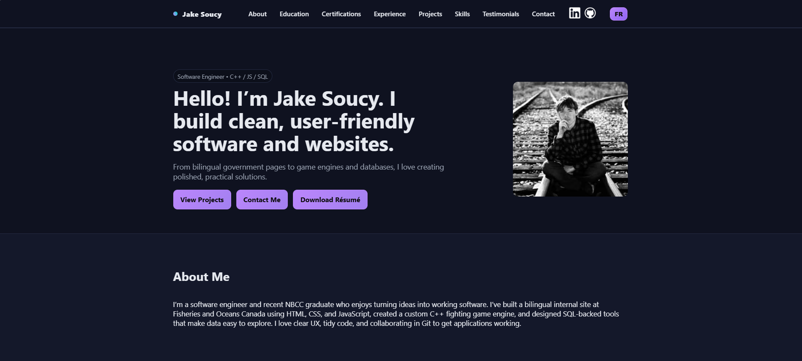
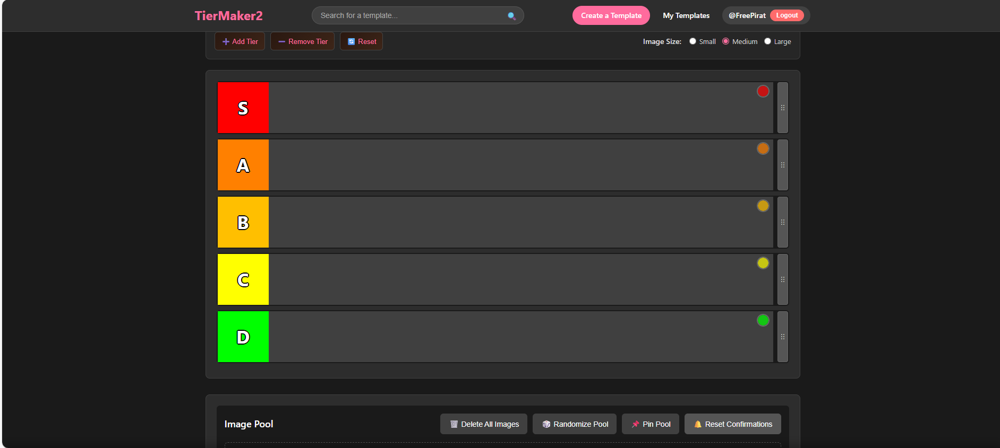
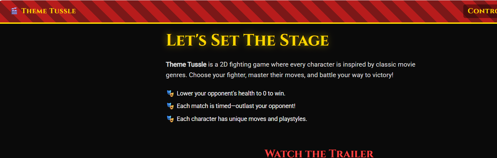

Developer Portfolio
Displays my background in programming
To explore other pages, click the button on the left to open the menu.
From there, you can select where you'd like to go.
Your profile is located in the top-right corner.
Please note that an account is required to access and play games.
Gambling in games can be an entertaining pastime, but introducing real money can quickly turn it into a serious issue. The goal of this website is to provide users with the excitement of gambling games without the need to spend actual money.
Hi, I'm Jake Soucy!
I'm a bilingual Software Engineer and recent graduate of NBCC, passionate
about programming and pushing the boundaries of my skills. I specialize
in web development and software engineering, and I'm always eager to tackle
new challenges.
If you're looking for a dedicated and skilled developer for your next project,
feel free to contact me—I’d be happy to connect!

Displays my background in programming

Allows users to create and share tier lists for various topics.

This is a website to give more information and details on the fighting game I've created, Theme Tussle.

A website demonstrating my editing history.